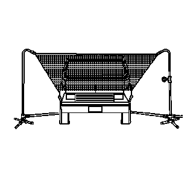
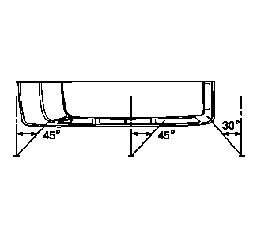

漏水测试准备
- • 上汽通用汽车有限公司的车辆是为在正常环境条件下运行而设计的。
- • 密封材料和部件的设计标准考虑了耐受自然环境因素所需的密封力。但这些规格不可能将所有人为条件考虑在内，如高压洗车。
- • 漏水测试程序与自然环境因素相关，并可确定车辆在正常运行条件下的性能。
- • 漏水测试的第一步是确定发生泄漏的条件。如果可以确定大致泄漏部位，则可用通水软管或空气软管隔离确切的进水点。检修泄漏时，可能需要拆卸某些饰板或部件。
- • 如果泄漏出现在车门、车窗、行李厢盖或举升门部位，则不一定是挡风雨条密封不良造成的。调整这些部位也许就能解决问题。
- 1.如图所示，装配喷淋试验台。
-

2.如图所示，放置试验台。试验台喷出的水雾如图所示喷到车上。
- 3.测试时，让一位助手在车内确定泄漏部位。
- 4.喷嘴处水压应保持155千帕（22磅力/平方英寸），并至少喷4分钟。
-

5.检查挡风玻璃时，应将喷射水流向下偏30度、向后偏45度。将水对准挡风玻璃角落。
- 6.检查侧车窗是否泄漏时，应使喷淋试验台朝向后侧围中心，喷射水流应向下偏30度、向后偏45度。
- 7.检查后窗时，应将喷射水流向下偏30度并向前偏30度。